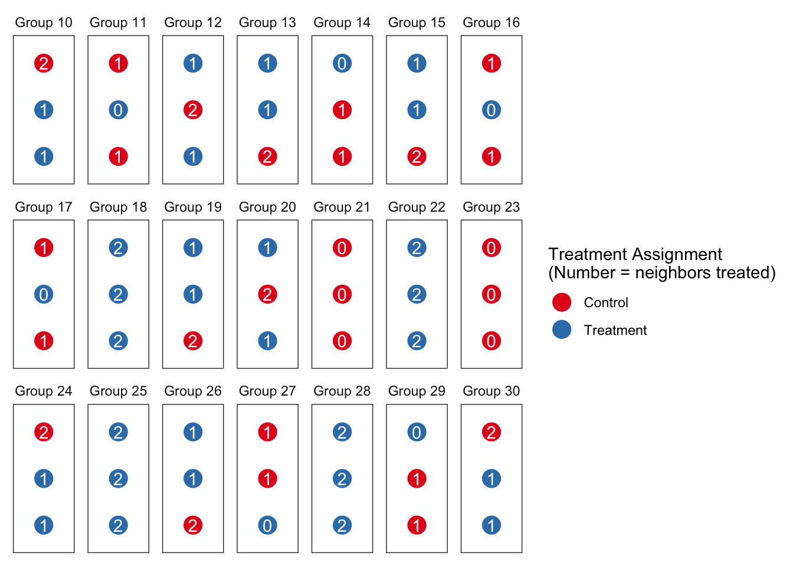
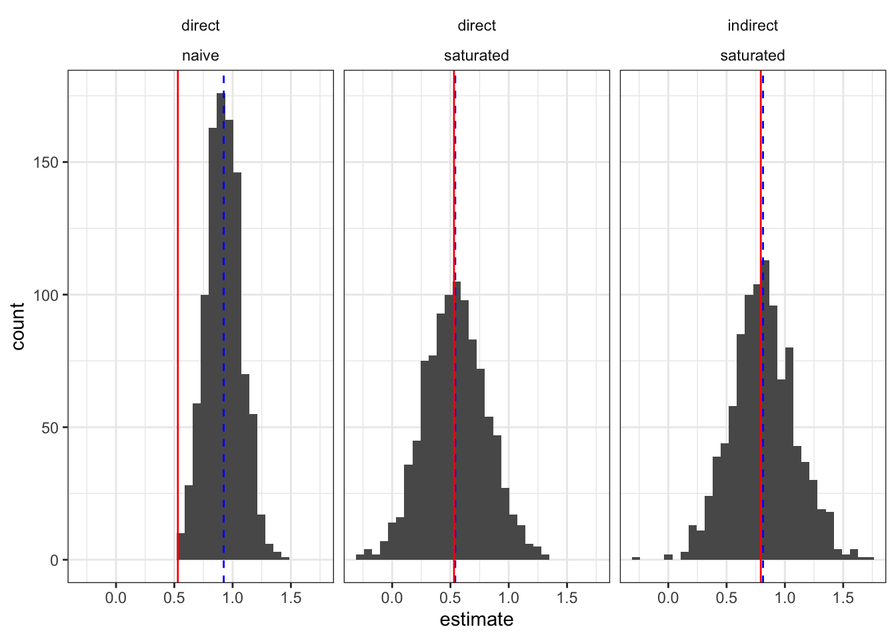
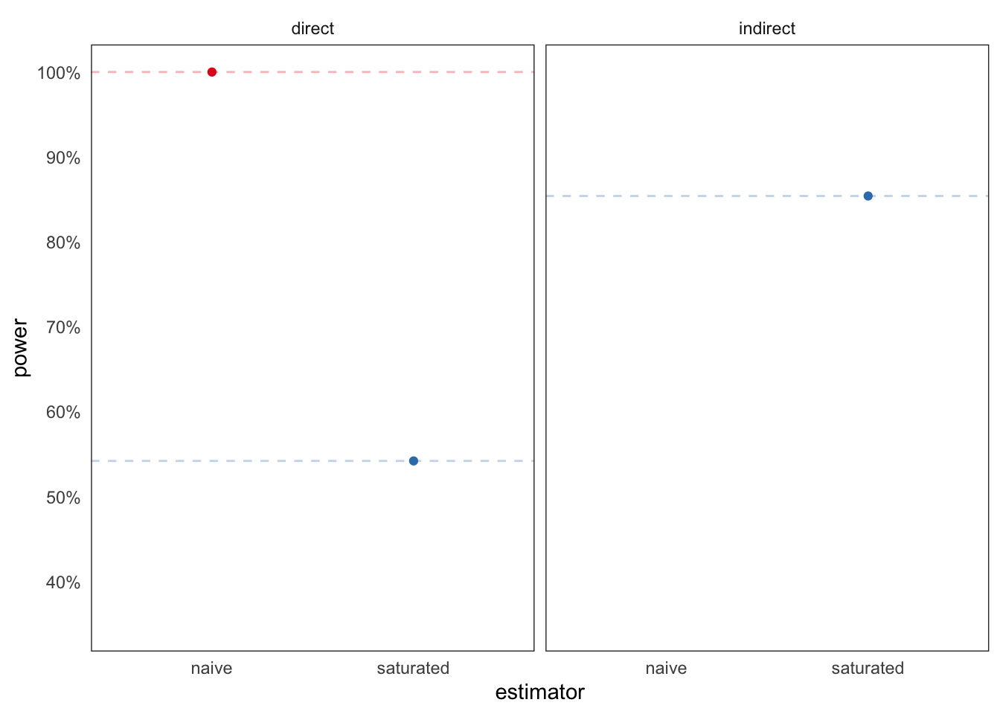
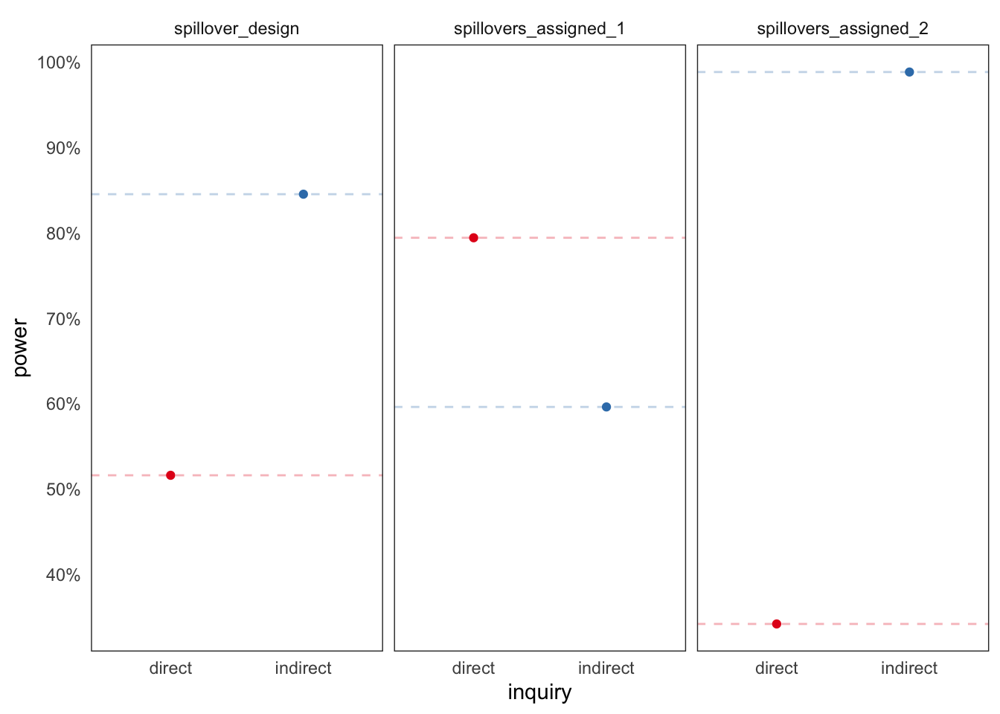

dgp <- function(i, Z, G) Z[i]/3 + sum(Z[G == G[i]])^2/5 + rnorm(1)
spillover_design <-
declare_model(G = add_level(N = 80),
j = add_level(N = 3, zeros = 0, ones = 1)) +
declare_inquiry(direct = mean(sapply(1:240, # just i treated v no one treated
function(i) { Z_i <- (1:240) == i
dgp(i, Z_i, G) - dgp(i, zeros, G)}))) +
declare_inquiry(indirect = mean(sapply(1:240,
function(i) { Z_i <- (1:240) == i # all but i treated v no one treated
dgp(i, ones - Z_i, G) - dgp(i, zeros, G)}))) +
declare_assignment(Z = complete_ra(N)) +
declare_measurement(
neighbors_treated = sapply(1:N, function(i) sum(Z[-i][G[-i] == G[i]])),
one_neighbor = as.numeric(neighbors_treated == 1),
two_neighbors = as.numeric(neighbors_treated == 2),
Y = sapply(1:N, function(i) dgp(i, Z, G))
) +
declare_estimator(Y ~ Z,
inquiry = "direct",
model = lm_robust,
label = "naive") +
declare_estimator(Y ~ Z * one_neighbor + Z * two_neighbors,
term = c("Z", "two_neighbors"),
inquiry = c("direct", "indirect"),
label = "saturated",
model = lm_robust)Spillovers are often seen as a nuisance that lead researchers into error when estimating effects of interest. In a previous post, we discussed sampling strategies to reduce these risks. A more substantively satisfying approach is to try to study spillovers directly. If we do it right we can remove errors in our estimation of primary quantities of interest and learn about how spillovers work at the same time.
This is important because spillovers are part of the overall effects of an intervention. If vaccination of one subject improves health outcomes for another, then this gain needs to be understood to assess the total benefits of vaccination. This is hard because we are not used to thinking of spillover effects as estimands, or to writing them in terms of potential outcomes, and so we generally do not think in terms of bias or power for spillover effects. But we can.
A spillover design and the idea of an indirect treatment
We declare a design based on the spillover_designer in the DesignLibrary package.1
In this design there are 80 groups, each of size 3. Treatment is randomly assigned—ignoring groups. Outcomes do depend on group membership, however. In particular, any individual’s outcome depends on the number of individuals in the group treated. A function (dgp) specifies how group assignments map into individual payoffs.2
The key feature of this design is that units belong in groups. When a unit gets treated, the effect of the treatment spreads out across other group members (but no further).
In this kind of setting, we can say you get indirectly treated when someone in your group – your “neighbor” – gets treated. In this case, we might think of the number of neighbors treated in a given assignment as your indirect treatment. For three-member groups, this definition of spillovers implies every unit has at least six potential outcomes \(Y_{z,n}\). For example, \(Y_{1,2}\) is the potential outcome for a unit who is treated in a group where both other members are treated, while \(Y_{1,0}\) is the potential outcome for a unit when they are the only member treated in their group.
If we plot the units in groups using colors for their individual treatment status and labeling them with the number of neighbors treated, one set of assignments for a sample of groups might look like this:

There are two notable departures from the design we looked at before. First, we declare an estimand for indirect effects and not just for direct effects. For direct effects we focus on the effect of being treated given no neighbors are treated (\(E[Y_{1,0} - Y_{0,0}]\)). For indirect effects we focus on the effect for an individual of having everyone else treated given that they themselves are not treated (\(E[Y_{0,2} - Y_{0,0}]\)).3 Importantly, this estimand is defined in terms of potential outcomes rather than being dependent on a particular model.
Second, alongside the naive estimator, we use an estimator that seeks to model the direct and indirect effects directly. By modelling indirect effects in the estimation step, we can seek to estimate the average direct treatment effect without bias and conditional on the number of neighbors treated.
In this context, where the spillover mechanism is well-understood and captured by the statistical model, our modelling approach does a great job of removing bias. Here we show the estimated effects of being treated when no others are treated (direct effect) and of not being treated when all others are treated (indirect effect). We see the mean estimate (dashed blue line) is right on the mean estimand (solid red line) in both cases when we model the spillovers:

Power for all estimates now looks like this:
Warning: The `guide` argument in `scale_*()` cannot be `FALSE`. This was deprecated in
ggplot2 3.3.4.
ℹ Please use "none" instead.
We have great power for the naive estimator – but only because it confidently delivers the wrong answer! The power from the saturated model is not so great, especially for the direct effect.
You can use assignment to improve power in the presence of spillovers
One approach to increase power for the direct effect is to tweak the assignment to control the number of groups that have one or two members treated.
Doing this may produce tradeoffs, however, between power for direct effects and power for indirect effects.
The current assignment just assigns units to treatment with .5 probability, ignoring groups. We’ll replace that step with a new assignment strategy where we directly control whether groups get 0, 1, or 2 members treated. (This kind of design is sometimes called a randomized saturation design.)
We declare a custom assignment that uses a two-stage procedure, in which we first assign groups to treatment densities, then assign units to treatment conditional on their group’s density.
two_stage <- function(data, density_probs){
density <- with(data, cluster_ra(clusters = unique(G),
conditions = c(0,1,2),
prob_each = density_probs))
data$Z <- with(data, block_ra(blocks = G, block_m = density))
return(data)
}Let’s compare two different first-stage approaches: one where we assign more of our groups to have 0 or 1 members treated, and another in which we assign more to have 0 or 2 members treated.
spillovers_assigned_1 <-
replace_step(
design = spillover_design,
step = 4,
new_step = declare_assignment(handler = two_stage,
density_probs = c(.45,.45,.1)))
spillovers_assigned_2 <-
replace_step(
design = spillover_design,
step = 4,
new_step = declare_assignment(handler = two_stage,
density_probs = c(.45,.1,.45)))Now power looks like this:

We see a large gain in power for the estimation of direct effects when assigning more groups to have 0 or 1 member treated, and a big loss when assigning fewer groups to those densities in favor of having 2 members treated. We see an opposite tradeoff for the estimation of indirect effects. Optimal assignment depends on the quantities of interest. See Baird et al. (2017) for a great treatment of these issues.
Some warnings
We got things right in part because we were right about the structure of spillovers. The estimation strategy did not assume much about the functional form of the spillovers but it did require being right about spillovers being contained within groups. If, in addition to the spillovers that we modeled, there were also spillovers between groups, then the estimation strategy would get things wrong in much the same way as the naive approach that ignored spillovers within groups got things wrong. So you need to use knowledge about the structure of spillovers. An interesting exercise is to alter the dgp function so that outcomes also depend on Z[1]—the treatment status of person number 1. How would that alter things?
Less obvious, perhaps, things were easy here because the group sizes were homogeneous. Why does that matter? The reason is that in this example uniform assignment probabilities for the direct treatment translated into uniform assignment probabilities for the indirect treatments. But generally you cannot count on this. In this case, if groups were of heterogeneous size and treatment was randomly assigned, then units in big groups would be more likely to be exposed to treatment indirectly than units in small groups: a unit in a group of size 3 would be less likely to have two neighbors treated (prob = .25) than a unit in a group of size 4 (prob = 3/8). This can produce bias if treatment effects also depend on group size. To remove the bias you would need to take account of the fact that the indirect treatments were assigned with unequal propensities (even though the direct treatments were assigned to all units with the same probability!). This is a very similar issue to one we discussed here, and some of those approaches to addressing bias arising from heterogeneous (indirect) assignment propensities can also help in the spillover context.
Also not too obvious, even if direct treatments are assigned independently, assignment of indirect treatments might be clustered. For example everyone in a family gets indirectly treated together when one member gets directly treated. Given the possibly complex nature of clustering, it might make sense to use randomization inference for hypothesis testing is this setting.
For more on this topic, including strategies for estimating uncertainty given indirect treatment, see, for example, Aronow and Samii (2017).
References
Aronow, Peter M, and Cyrus Samii. 2017. “Estimating Average Causal Effects Under General Interference, with Application to a Social Network Experiment.” The Annals of Applied Statistics 11 (4): 1912–47.
Baird, Sarah, J Aislinn Bohren, Craig McIntosh, and Berk Özler. 2017. “Optimal Design of Experiments in the Presence of Interference.” Review of Economics and Statistics, no. 0.
Footnotes
As with any design from the library, you can always look at the underlying code using
get_design_code(spillover_designer()).↩︎This dgp function differs from what we examined before by having spillovers that are not complete: direct effects differ from indirect effects.↩︎
In fact if you look a the design declaration we are a little more thorough and define the estimand in terms of the treatment status of all individuals and not just the in-group members.↩︎